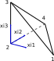

Solid Elements Implementation
Tetrahedron Solid Element
The tetrahedron element considered is a four-node linear element. The isoparametric coordinates reference element is shown in the following figure

and the linear shape functions are given by
\[N_1(\xi) = \xi_1 \quad N_2(\xi) = 1-\xi_1-\xi_2-\xi_3 \quad N_3(\xi) = \xi_3 \quad N_4(\xi) = \xi_2\]
The functions can be expressed in vector form
\[ \textbf{ N } = \left[ \begin{matrix} N_{1} \\ N_{2} \\ N_{3} \\ N_{4} \end{matrix} \right]\]
and the linear interpolation of the coordinates of any point within an element can be written as
\[\textbf{X} = eleCoordMat . \textbf{N}(\xi)\]
where $eleCoordMat$ is a matrix with the reference configuration coordinates (or material coordinates) of the nodes:
\[eleCoordMat = \left[ \begin{matrix} X_{11} & X_{12} & X_{13} & X_{14} \\ X_{21} & X_{22} & X_{23} & X_{24} \\ X_{31} & X_{32} & X_{33} & X_{34} \\ \end{matrix} \right]\]
where $X_{ij}$ represents the coordinate in the $i$-th dimension of the $j$-th node.
The displacements gradient tensor is defined as
\[ \textbf{ H } = \frac{ \partial \textbf{ u } } { \partial \textbf{ X } } \qquad H_{ij} = \frac{ \partial u_i } { \partial X_j }\]
and using the displacement interpolation can be written in matrix form as
\[\textbf{ H } = eleDispsMat . \frac{\partial \textbf{N}}{ \partial \textbf{X}}\]
The material-isoparametric coordinates relation is given by:
\[\textbf{X} = eleCoordMat . \textbf{ N }(\xi)\]
and using the chain rule we obtain:
\[\frac{\partial \textbf{N}}{ \partial \textbf{X}} = \frac{\partial \textbf{N}}{ \partial \xi } . \frac{\partial \xi }{ \partial \textbf{X} } \]
Then using the inverse theorem we obtain:
\[\frac{\partial \xi}{ \partial \textbf{X}} = \left( eleCoordMat . \frac{\partial \textbf{N}}{ \partial \xi } \right)^{-1}\]
\[\nabla \textbf{u} = eleDispsMat . \left( eleCoordMat . \frac{\partial \textbf{N}}{ \partial \xi } \right)^{-1}\]